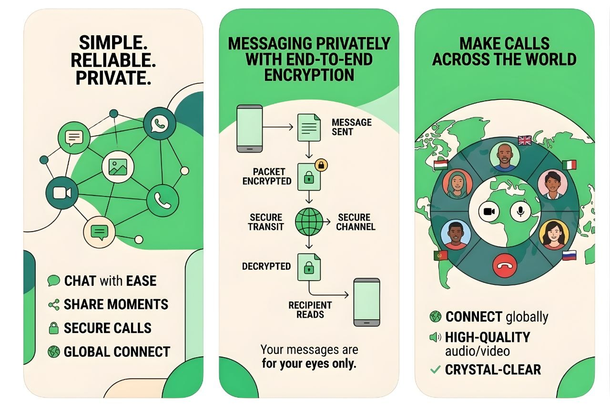
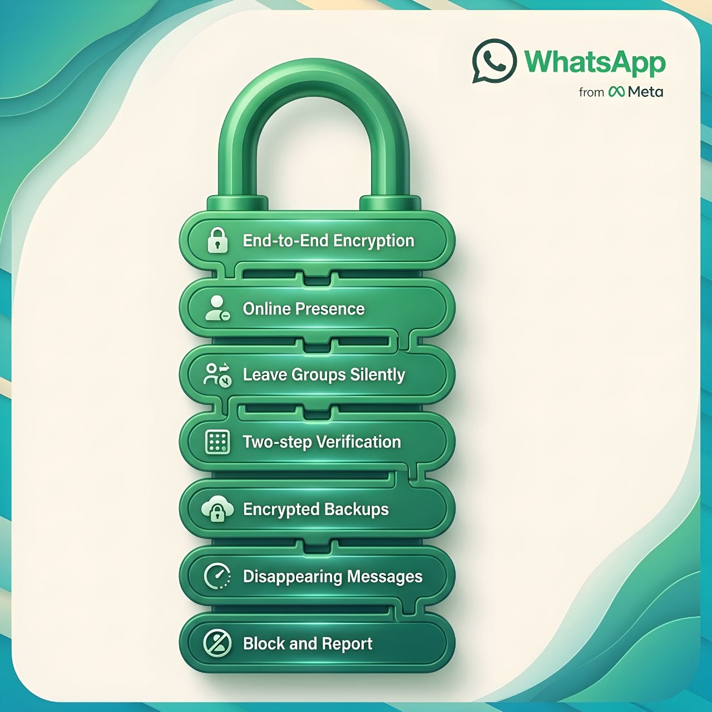

Messaging is part of everyday life. People use it to talk with family, make plans with friends, share photos, contact customers, and work with teams. WhatsApp Messenger is one of the world's best-known messaging apps. It lets people send messages and make voice or video calls over the internet.
But what can WhatsApp do? Is it free? How private are your chats? Can you use it on a computer? This guide explains its main features, setup process, privacy tools, costs, advantages, and limits in simple language. By the end, you should have the information you need to decide whether WhatsApp is right for you.
What Is WhatsApp Messenger?
WhatsApp Messenger is a messaging app from Meta. It is available for supported Android phones, iPhones, and computers. You can use it to send text messages, share photos and documents, create group chats, and make voice or video calls.
WhatsApp uses the internet instead of the traditional SMS system for its messages. You can connect through Wi-Fi or mobile data. The people you contact also need a WhatsApp account and an internet connection to receive your messages and calls.
People use WhatsApp for personal conversations, family groups, school updates, community discussions, and everyday business communication. Its simple chat screen makes it easy for most people to learn.
How Does WhatsApp Work?
Your WhatsApp account is registered with a phone number. During setup, WhatsApp asks you to verify that number. After verification, you can start chats with people who use the service.
When you send a message, your device sends it over the internet so WhatsApp can deliver it to the recipient's device. Personal messages and calls are protected by end-to-end encryption by default. This means the content is designed to be readable or heard only by the people taking part in that conversation.
You do not need to buy an SMS bundle to send WhatsApp messages, but you do need internet access. Your mobile provider may charge you for data. Photos, videos, documents, and long calls can use more data than short text messages.
Main Features of WhatsApp Messenger
1. Text and voice messages
You can send private messages to one person or chat with a group. You can also record voice messages when typing is not convenient. Message replies, reactions, forwarding, editing, and deletion tools help you manage conversations. Some actions have time or availability limits.
2. Voice and video calls
WhatsApp supports voice and video calls over the internet, including group calls. Call quality depends on your connection, device, and network conditions. A weak connection may cause delays, poor sound, frozen video, or dropped calls.
3. Photos, videos, documents, and location
You can share media, documents, contacts, and location information in chats. This is useful for sending a work file, sharing a picture, or helping someone find a meeting place. Large files may use a lot of mobile data and storage space.
4. Group chats
Groups let several people communicate in one conversation. They are useful for families, classes, clubs, and project teams. Group admins can manage certain settings, including who can change group information. You can also adjust who is allowed to add you to groups.
5. Status updates
Status lets you share photos, videos, text, and other updates that disappear after 24 hours. You can choose who is allowed to see your status. Check the audience setting before posting personal information.
6. Channels and Communities
Channels provide a way to receive updates from creators, organizations, public figures, and brands. They are different from private chats: followers mainly receive updates from the channel. Communities help bring related groups together, such as separate groups for classes within one school community.
7. Chat organization and privacy controls
You can search conversations, pin important chats, archive chats, mute notifications, block contacts, and use disappearing messages in supported chats. These tools help you manage busy conversations and control some parts of your experience.
8. Linked devices
You can link supported computers and other devices to your account. This lets you continue many conversations from a larger screen. Only link devices you trust. Review your linked-devices list and log out of devices you no longer use or do not recognize.

How to Download and Set Up WhatsApp
Download WhatsApp only from an official app store or the official WhatsApp website. Avoid unofficial modified versions because they may put your account and personal information at risk.
On Android
- Open the Google Play Store.
- Search for WhatsApp Messenger and check that the publisher is WhatsApp LLC.
- Install and open the app.
- Choose your country and enter your phone number.
- Enter the verification code sent to your number. Never share this code with anyone.
- Follow the steps to add your name and optional profile photo.
On iPhone
- Open the Apple App Store.
- Search for WhatsApp Messenger and check the app publisher.
- Install the app and open it.
- Enter your phone number and complete the verification step.
- Follow the on-screen instructions to finish your profile.
On a computer
Use the official desktop app or WhatsApp Web at web.whatsapp.com. Follow the instructions to link your account, usually by scanning a QR code from WhatsApp on your phone. Never scan a code sent by a stranger or displayed on a website you do not trust.
How to Use WhatsApp
Send a message
- Open WhatsApp and select a contact or start a new chat.
- Tap the message box and type your text.
- Tap the send icon.
- Check the message indicators to see its delivery status. Read receipts depend on chat type and privacy settings.
Make a call
Open a chat and tap the voice-call or video-call icon. Allow microphone or camera access when your device asks. You can change these permissions later in your phone settings.
Share a file
Open a chat, tap the attachment or plus icon, choose the item you want to share, select the file, and send it. The available options may differ between Android, iPhone, and desktop versions.
Change your profile and privacy settings
Open Settings and review your profile and Privacy options. You can control who sees details such as your profile photo, About information, last seen, online status, and Status updates. Menu names may vary slightly between devices.
WhatsApp Privacy and Security: What You Should Know
WhatsApp includes security features, but no messaging app can protect you from every risk. Your settings and habits matter too.
End-to-end encryption
WhatsApp says personal messages and calls are end-to-end encrypted by default. In simple terms, the content is encrypted on the sender's device and is meant to be decrypted only on the recipient's device. WhatsApp says it cannot read the content of these encrypted personal conversations while they are being sent.
Encryption does not mean that every piece of information connected to your account is hidden. Account details and certain usage information are handled under WhatsApp's Privacy Policy. Read that policy if you want to understand how information is collected and used.
Understand chat backups
Cloud backups are separate from the normal delivery of encrypted messages. WhatsApp offers an optional end-to-end encrypted backup setting in supported situations. If you use cloud backups, review the encryption options and protect the password or key. If you lose that password or key, you may not be able to restore the encrypted backup.
Enable two-step verification
Two-step verification adds a PIN that may be requested when your phone number is registered with WhatsApp again. Turn it on in account settings and add a recovery email if the app offers that option. Choose a PIN that is difficult to guess and never share it.
Protect yourself from scams
- Never share your registration code or two-step verification PIN.
- Be careful with messages promising prizes, urgent payments, jobs, or easy money.
- Avoid unexpected links and files from unknown senders.
- Confirm unusual money requests by contacting the person through a trusted method.
- Block and report accounts that send spam or suspicious messages.
- Check linked devices and remove anything you do not recognize.
Control who can contact you
Use privacy settings to limit who can see your information and add you to groups. You can block a contact if needed. Remember that blocking someone cannot remove copies or screenshots of information they already received.

Using WhatsApp on Different Devices
WhatsApp supports phones and linked companion devices, including supported desktop apps and web browsers. This makes it possible to reply from a computer when your phone is not in your hand. The experience and available features may differ between platforms.
Keep your computer and browser updated. On a shared or public computer, do not save your session, and always log out when you finish. Check the linked-devices section on your phone from time to time.
Is WhatsApp Free?
WhatsApp Messenger is free to download and use for standard messaging and calling features. You do not normally pay WhatsApp a per-message fee for regular chats. However, your internet or mobile provider may charge you for data or service access.
Video calls, voice calls, and media sharing can use more data than text messages. If your data plan is limited, use Wi-Fi when possible and review your phone's data settings. Some optional business-related products may have separate terms or costs, so check official details before paying for anything.
WhatsApp Messenger vs WhatsApp Business
WhatsApp Messenger is mainly designed for personal communication. WhatsApp Business is a separate app with tools for businesses that want to communicate with customers. A small shop, for example, may use a business profile to show its opening hours, address, and product information.
| Area | Messenger | Business |
|---|---|---|
| Main purpose | Personal chats and calls | Customer communication |
| Profile | Personal profile | Business profile and details |
| Tools | Everyday messaging tools | Business features such as catalogues, where available |
| Best for | Friends, family, and personal contacts | Small businesses and customer support |
Business tools and availability can change by country and account. Visit the official WhatsApp Business website for current details.
Advantages and Disadvantages of WhatsApp
Advantages
- Easy to learn: The chat layout is simple for most new users.
- Many tools in one app: Messages, voice notes, calls, groups, and file sharing are available together.
- Encrypted personal chats and calls: End-to-end encryption helps protect conversation content while it is sent.
- Linked devices: You can continue many conversations from a supported computer.
- Useful groups: Families, classes, and teams can keep discussions together.
- No standard subscription fee: The main app is free to use, although internet data may cost money.
Disadvantages
- Needs internet: You cannot send or receive new messages without a connection.
- Uses a phone number: Registration is tied to a number you can verify.
- Data and storage use: Frequent calls and media sharing may use significant resources.
- Scams still exist: Encryption cannot stop people from tricking you into sharing information or money.
- Features can vary: Device, app version, and region may affect availability.
- Groups can be distracting: Busy chats may create many notifications.
Who Should Use WhatsApp?
WhatsApp may suit you if your friends, family, customers, or colleagues already use it. It is useful when you want one app for everyday messages, voice notes, calls, group discussions, and file sharing.
It may not suit you if you do not want to register with a phone number, need to contact people who use another platform, or prefer not to use a service connected to Meta. Think about the people you need to reach, your privacy needs, and the features you actually use.
What to Check Before Choosing WhatsApp
- Your contacts: Do the people you need to reach use WhatsApp?
- Your internet plan: Do you have reliable Wi-Fi or enough mobile data?
- Your privacy needs: Have you reviewed the Privacy Policy, backup options, and profile visibility?
- Your devices: Does your phone or computer meet the current app requirements?
- Your purpose: Do you need a personal messenger or a business communication tool?
For safe installation, use the official WhatsApp download page. For setup and troubleshooting, visit the official WhatsApp Help Center.
Frequently Asked Questions
Is WhatsApp Messenger really free?
Yes. The standard app is free to download and use. Your mobile or internet provider may still charge you for data.
Do both people need WhatsApp to chat?
Yes. Both people need WhatsApp accounts to exchange WhatsApp messages and calls. SMS is a separate service.
Can I use WhatsApp without a SIM card?
Account registration requires a phone number that you can verify. After setup, linked devices may let you use the account in supported ways, but you should not assume you can create a new account without access to a valid number.
Can I use WhatsApp on my computer?
Yes. You can link supported computers through WhatsApp Web or the desktop app. Use the official service and review your linked devices.
Are WhatsApp messages private?
Personal messages and calls are end-to-end encrypted by default. Account information, usage information, and backup settings are separate matters. Read the Privacy Policy and review encrypted backup options.
Can I recover deleted WhatsApp messages?
It depends on how the messages were deleted and whether you have a suitable backup from before they were removed. Restoring a backup may replace newer chat history, so read the restore instructions carefully. Recovery is not guaranteed.
What is the difference between WhatsApp and WhatsApp Business?
Messenger is designed for personal communication. WhatsApp Business adds tools such as a business profile and customer messaging features for eligible users.
Does WhatsApp work without internet?
No. Sending and receiving new messages and making internet calls require an internet connection. Some content already saved on your device may still be viewable offline.
How can I make my account safer?
Enable two-step verification, keep your registration code private, use a strong phone lock, review linked devices, update the app, and be careful with unknown links and payment requests.
Where should I download WhatsApp?
Use Google Play, the Apple App Store, or the official WhatsApp download page. Avoid unofficial modified apps.
Final Thoughts
WhatsApp Messenger is a practical option for people who want messaging, voice and video calls, group chats, and media sharing in one place. Its familiar design makes everyday communication simple, while features such as end-to-end encrypted personal chats, linked devices, and privacy controls add useful protection and flexibility.
However, it has limits. You need an internet connection, your account is linked to a phone number, and you still need to watch out for scams and suspicious requests. Take time to review your privacy settings and secure your account before using it regularly.
If the people you want to contact already use WhatsApp and its privacy approach meets your needs, it can be a convenient choice. Download it from an official source and explore the settings at your own pace.